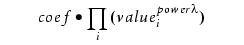

Describes a VT5 resist model.
Input for:
vt5gen (to serve as the nominal (initial) model)
modelflow (Version 1) (to serve as the nominal (initial) model)
Generated by:
Creating a VT5 model results in a .mod file that fully defines that model. This file is the model itself, which you can include inline in a setup file or reference using the resistpolyfile keyword in a setup file or the vt5 parameter in modelflow (Version 1).
EPEf — final EPE = EPEv + bias
EPEv — EPE predicted by VTR at threshold value Tv
Tv — VTR threshold = Pt(imax,slope,factor,imin,islope,d1…dn)
bias — EPE bias = Pb(imax,slope,factor,imin,islope,d1…dn)
Pb — bias polynomial expression
Pt — threshold polynomial expression
EPEr — reference threshold EPE
Tr — reference threshold
The VT5 model consists of statement lines, blank lines, and comment lines. Each statement must be on a line by itself. Comment lines must begin with ‘#’.
The model version number. Currently, the only VT5 version supported is 3.
This indicates the type of model to be required. At present, only VT5 models are supported.
A description of the convolution kernel with which the reference aerial image will be convolved. You must supply one CKERNEL statement for every convolution. Since the convolution kernel is flipped, CKERNEL can only be used for symmetrical kernels (gauss). For the asymmetrical kernels (gaussm and gaussp), use DKERNEL instead.
Use DKERNEL statements to represent the directional density kernels gaussm and gaussp. Directional density kernels are aligned in the x-axis with the VT5 site, with the center of the kernel positioned at the intersection of the reference layer and the site:
In the gaussp example, the density value for site 1 is 0, since the kernel does not intersect the reference layer. In site 2, the density value is almost 1, because the kernel is almost completely covered by the reference layer.
which — The name of the kernel. Names take the form Dn where D stands for “Density” and n represents the index of the kernel, such as D1, D2, and so on. You can use CKERNELs as terms within bias polynomials or threshold polynomials. When you do, you refer to them by these names.
expression — A Tcl expression that gives the value of the kernel at a each coordinate. The expression can be any function of (x,y,r) in microns, such as kernel = f(x,y,r).
You can also take advantage of built-in expression shortcuts:
gauss sigma — A symmetrical Gaussian kernel (used with CKERNEL) with user-specified sigma (microns). This is a shortcut for a Gaussian kernel:
tophat outer inner — A tophat kernel whose value is 1 when outer > r >= inner and 0 otherwise (inner and outer specified in microns).
You define the diameter and gridsize for the kernels through the model parameters hoodpix and kerngrid, respectively.
The interaction diameter of all CKERNELs. This value must be a multiple of the database units. Note that this is not the same value as the hoodpix for an optical model (also called optical diameter).
The kernel gridsize, specified in microns.
An optional statement used to specify the layer to be convolved with the density kernels. The default value is refimage, which refers to the reference aerial image.
An optional statement used to indicate that the model is defined through a threshold polynomial. The arguments to this statement declare the parameters to be used in the threshold polynomial. You can supply as many TPAR statements as needed.
In the .mod file, the TPAR statement must appear before any TTERM statements that define the actual terms and their coefficients.
This statement is required when using TPAR. It defines how many TTERMs will be in the model. If the number of TTERM statements does not match this number, it will be a user error.
Required when using TPAR, each TTERM statement defines a single term in the polynomial. The first value, coef, defines the scalar coefficient for this polynomial term. The value power list defines the parameter(s) that serve as values for the term and the exponents for those values. The value must be one of {IMAX | SLOPE | FACTOR | ISLOPE | IMIN | D0 | … | Dn}. The list can contain up to two values.
For example, the following equation describes a single monomial term:

of the threshold polynomial:
The lower limit on the output threshold from the threshold polynomial.
The upper limit on the output threshold from the threshold polynomial.
An optional statement used to indicate that the model is defined through a bias polynomial. The arguments to this statement declare the parameters to be used in the bias polynomial. Multiple parameters are allowed.
In the .mod file, the BPAR statement must appear before any BTERM statements that define the actual terms and their coefficients.
This statement is required when using BPAR. It defines how many BTERMs will be in the model. If the number of BTERM statements does not match this number, it will be a user error.
Required when using BPAR, each BTERM statement defines a single term in the polynomial. The first value, coef, defines the scalar coefficient for this polynomial term. The value power list defines the parameter(s) that serve as values for the term and the exponents for those values. The value must be one of {IMAX | SLOPE | FACTOR | ISLOPE | IMIN | D0 | … | Dn}. The list can contain up to two values.
For example, the following statement describes a single monomial term:
of the threshold polynomial:
The upper limit on the absolute value of the output bias from the bias polynomial.
An optional statement that defines upper and lower bounds for TPAR or BPAR parameters. During evaluation of the polynomial, all bounded inputs that are outside of the bounds will be limited to the bounds. You must supply one bound statement for every parameter to be bounded.
A required statement that defines the threshold value used to compute the following:
The slope — The slope for any site is calculated at the point where the intensity equals the reference threshold. If no such point exists, the maximum slope is used.
The reference image — The reference image, which is convolved with the CKERNELS, is calculated using a constant threshold equal to this value.
A required statement defining the spacing between control points on the sites.
A required statement defining the lowest eigenvalue to use in linear least square fitting that occurs during model building. The val must be > 0.001 (previous to Calibre 2006.1, this value must be > 0.0002).
An optional keyword setting the name of this model.
An optional constant bias (fixed shift) to apply to all EPEs resulting from a simulation.
An optional statement supplying the name of an optical model. If defined, then this VT5 model will only work with the indicated optical model.
An optional statement that defines an optional distance to search from the reference location when finding the IMAX and IMIN values. It searches along the image over an entire distance of 2*searchRange, meaning that it searches to the left and to the right by searchRange. If this value is not set (or set to a negative number) the application defaults to 0.5*λ/NA.
An optional switch that when set to 1 indicates that the design matrix was centered before performing regression. This allows building models with a larger first coefficient, making them closer to a CTR model, and therefore more stable.
type VT-5
ttermCount 1
TTERM 0.2type VT-5
TPAR IMAX SLOPE
ttermCount 6
TTERM 0.2
TTERM 0.073 SLOPE 1
TTERM 0.383 IMAX 1
TTERM -0.09 IMAX 2
TTERM 0.103 IMAX 1 SLOPE 1
TTERM 0.032 IMAX 2 SLOPE 1
maxThreshold .3
minThreshold .2
sampleSpacing .020type VT-5
TPAR IMAX SLOPE FACTOR
ttermCount 8
TTERM 0.2
TTERM 0.073 SLOPE 1
TTERM 0.383 IMAX 1
TTERM -0.09 IMAX 2
TTERM 0.103 IMAX 1 SLOPE 1
TTERM 0.032 IMAX 2 SLOPE 1
TTERM 0.120 FACTOR 1
TTERM -0.09 FACTOR 2maxThreshold .3
minThreshold .2
sampleSpacing .020type VT-5referenceThreshold 0.2
hoodpix 1.28
kerngrid 0.01
CKERNEL D1 "gauss 0.2"
CKERNEL D2 "gauss 1.7"BPAR SLOPE D1 D2
btermCount 3
BTERM 0.073 SLOPE 1
BTERM 0.09 D1 1
BTERM -0.027 D2 1
maxBias 0.080version 3
type VT-5referenceThreshold 0.2
hoodpix 1.28
kerngrid 0.01
sampleSpacing .020DKERNEL D1 “gaussm 0.2”
CKERNEL D2 “gauss 1.7”TPAR D1 D2
ttermCount 3
TTERM 0.2
TTERM -0.01 D1 1
TTERM 0.021 D2 1Convolution kernels (which are separate from optical kernels) play an important role in VT5 models. Sometimes called density kernels, convolution kernels are general 2D functions that model the density of features on the chip having an aerial image intensity greater than or equal to the reference threshold.
Density data is generated through a preliminary simulation step and calculated at the simulation sites on the OPC layer. Note that the densities are therefore not calculated for visible layers. You can instruct Calibre WORKbench to build densities into a process model using the syntax described in the section entitled “VT5 Model File Format”. These density kernels get convolved with the reference image prior to the final simulations. In defining the kernels to use, you can take advantage of two built-in kernel functional forms:
Gaussian
Tophat
Some tophat kernel functions are shown in Figure 4. If the tophat kernels do not overlap with each other spatially, then they are called orthogonal. The orthogonal tophat kernels have properties that are exploited in the modelflow operation.